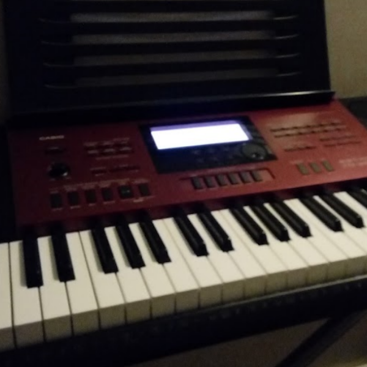
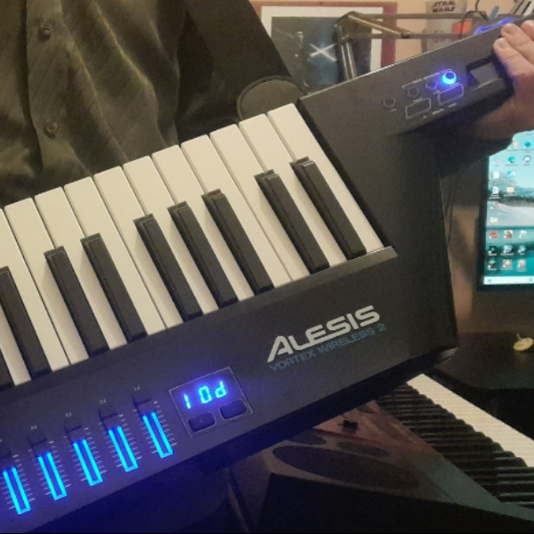
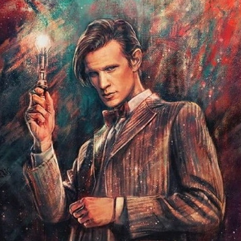

Hobbies
Piano 🎹
I've been playing the piano since I was 12, self-taught. I play a variety of genres, but mainly focus on video game and film music.
Keytar 🎹
Recently, I've also started playing the keytar.
Drawing ✏️
I love drawing. I took lessons for three years, but I stopped because I don't like being told what to draw. I prefer to draw when I feel like it.
Primarily, I draw in a manga style digitally, but I also enjoy realistic drawings in traditional media.
Gym 🏋️
For the past year and a half, I've been doing weightlifting. It's really great; it helps me clear my mind, take some time for myself during the day, be alone with my thoughts, and not think about anything.
Video Games 🎮
Video games are also a big part of my life. Right now, with my studies and extracurricular activities, I have less time, but whenever I have a bit of free time, I play Geometry Dash or Mario Kart.
Computer-assisted music production 🎛️
I've dabbled a bit in computer-assisted music production. My skill level isn't very high because I don't have time to do it regularly, but I love creating little tunes or remixes.
Here's one of my favorite pieces of music that I've never finished: it's a remix of "I am the Doctor" by Murray Gold, a track from the Doctor Who series.
